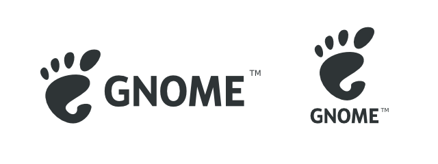

If you have any questions about any of these practices or GNOME Foundation’s use of your personal information, please feel free to contact us by e-mail or by post.
Part of the Foundation’s purpose is to be a neutral, independent body which organizations can use as an initial touchpoint before becoming more deeply involved with The GNOME Project. Through this and other activities, the members of the Board and employees and agents of the Foundation shall, from time to time and in the regular course of business, be made aware of confidential and sensitive information.
Members of the board pledge upon their election and upon the publication of this addendum to keep this information confidential. Employees and agents pledge upon hiring or publication of this addendum to keep this information confidential, at risk of termination. Information that is public knowledge or that individuals came to know through other means is not covered by this provision. Confidential information must be marked confidential.
One of the functions that the GNOME Foundation provides is to act as the legal owner for such GNOME project assets as the GNOME name and the GNOME foot. We must protect these trademarks in order to keep them. Therefore, we have some guidelines for their use and a standard agreement for user groups. These cover many common situations; if you need permission to use the GNOME trademarks in other ways or have other questions, please
contact licensing@gnome.org.
The GNOME trademarks are:
■ The word GNOME™
■ The GNOME foot logo:
For more details on the logo and the SVG file, go to the logo & trademarks page.
Under the law, “fair use” of trademarks is allowed (for example, trademarks typically may be used without permission in magazine and book reviews). The GNOME Foundation trademark usage guidelines for third parties describe what is appropriate fair use of the GNOME trademarks.
User groups are a very important part of the GNOME community. User groups have a need to make use of the GNOME trademarks in such ways as creating and distributing marketing materials or creating web sites. (The usage of the term user group here is broad: the canonical example would be a group of people using and promoting GNOME in a specific locality, but it could also be a group of developers working on an open source GNOME application or many similar non-commerical uses.)
By agreeing to the GNOME user group license agreement a user group obtains permission to use the GNOME trademarks under certain conditions.
Unless you assent, GNOME Foundation will never share the personal information you provide to us except as described below.
GNOME Foundation may disclose your personal information to third parties under any of the following circumstances:
■ As may be required to fulfill orders, to conduct billing/credit card processing, to provide service, and for e-mail housing (as a consequence of uses already described in this Privacy Statement).
■ As required by law (such as responding to a valid subpoena, warrant, audit, or agency action, or to prevent fraud). Aggregated information may be distributed for the purposes of characterizing the GNOME community and planning future events. All personal details will be removed from such aggregated information (such aggregated information is used to describe our services to current and prospective partners and other third parties, and is not used to contact the subjects of the report.)
The Employer Identification Number (EIN) of the GNOME Foundation, also known as Federal Tax Identification Number, is 043572618.
We retrieve basic information from your Facebook account, including your username, name, profile picture, email address, friends connections, events and posts.
Data retrieved is used by our application to populate your address book, calendar and chat with your contacts.
Data collected is not communicated to third parties. It is only stored locally on your device.